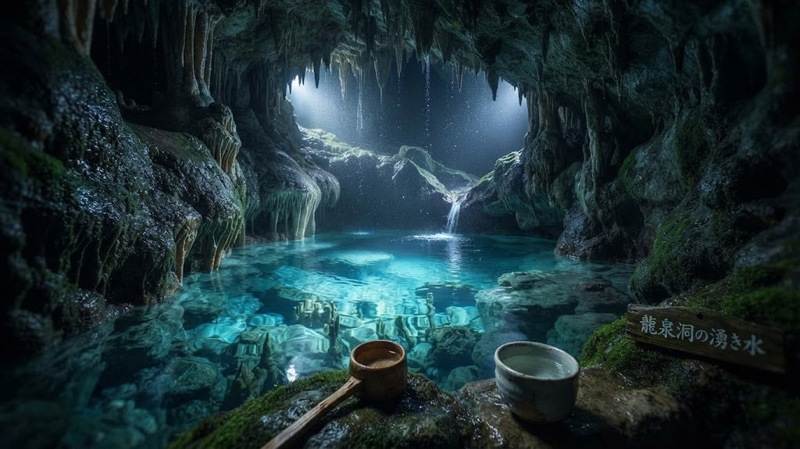
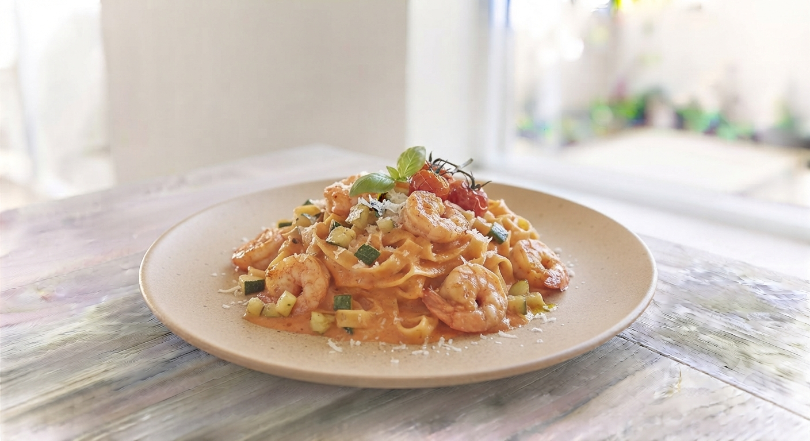
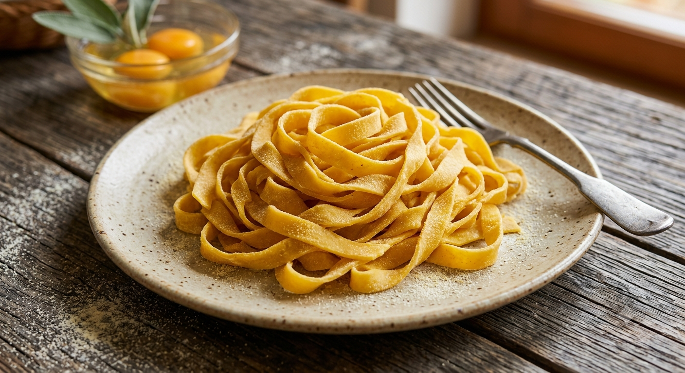
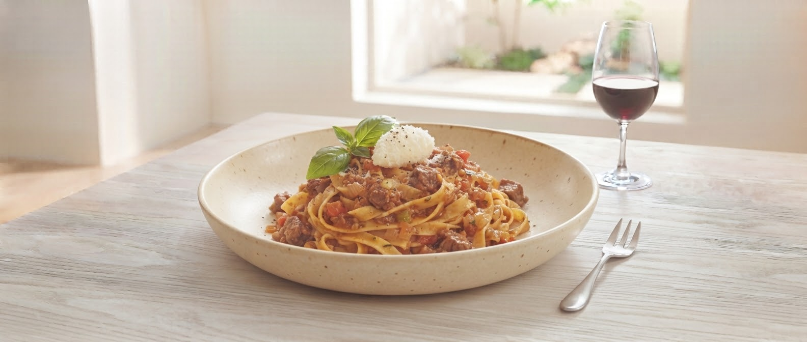

龍泉洞の「命の水」
岩泉町が誇る日本三大鍾乳洞、龍泉洞。その透明度溢れる天然水を使用することで、麺に独特の透明感とコシ、そして小麦の甘みを最大限に引き出します。

Morioka Station / Handmade Pasta
龍泉洞の水と最高級粉が
織りなす、奇跡の食感。
盛岡駅直結「フェザン」B1F。
岩手短角牛のボロネーゼと共に味わう、至福の時間。
Follow Us on Instagram
@freschissima_morioka
岩泉町が誇る日本三大鍾乳洞、龍泉洞。その透明度溢れる天然水を使用することで、麺に独特の透明感とコシ、そして小麦の甘みを最大限に引き出します。

最高級デュラム・セモリナ粉を100%使用。その日の気温や湿度に合わせ、店内の製麺機で丁寧に仕上げます。乾麺では決して味わえない「もちもち感」の極致。

噛むほどに旨味溢れる「短角牛」、きめ細かな肉質の「白金豚」。そして三陸の海の幸。岩手の旬の食材を、シェフが最高の一皿へと昇華させます。
Signature
短角牛
ボロネーゼ
岩手短角牛の赤身の旨味を凝縮し、じっくりと時間をかけて煮込んだソース。自家製のきしめん状パスタがその旨味を逃さずキャッチします。一口食べれば、素材の持つポテンシャルの高さに驚くはずです。
Price
「盛岡に帰ったら絶対食べたいパスタ‼️」
「食べてびっくり、うわー、すごく美味しい‼️ 提供時間も早いし、スタッフは感じ良いし、ホント素晴らしい‼️」
「関東なら行列必須のお店、間違いなし。」
「岩手駅近辺ランチでお気に入りのお店です。地産地消メニュー豊富で観光客にもいい。生パスタなので食べ応えがあります。」
ご自宅でも「フレスキッシマ」の感動を。お客様の声から生まれた新サービス。
お店の味をご自宅で完全再現。一晩じっくり煮込んだ「岩手短角牛のボロネーゼソース」と、龍泉洞の水で仕込んだ「もちもち生パスタ（冷凍）」をセットにして、全国へお届け・店頭での受け取りが可能になります。
「今日の夕飯に家でこの麺を食べたい！」というお客様の声にお応えし、その日の朝に製麺した新鮮な生パスタ麺の店頭パック販売を開始します。お好きな市販ソースと合わせて、お店クオリティの食感を手軽に。
Morioka Pasta Specialty Store
落ち着いたおしゃれな店内で、女性お一人様でもお気軽にご利用いただけます。盛岡駅での待ち時間、お仕事帰り、観光の思い出に。最高の一皿をご用意してお待ちしております。